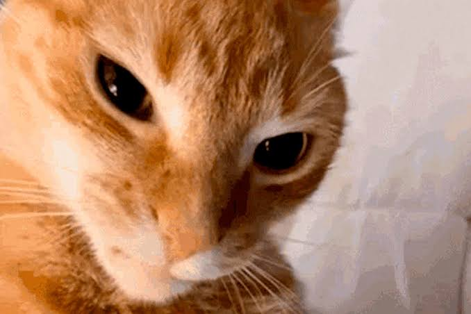

Curriculum Vitae

Gato pendejo
Resumen
Gato pendejo es un gato todo pendejo, en si es un fracasado bueno para nada, solo sabe comer, cagar y dormir en toda su vida. Lo unico bueno del gato pendejo es que es un gato, pendejo si, pero, es naranja, nada mas peor que nacer asi, bien pendejo.
Datos personales
- Vive en la calle.
- Es naranja.
- Es pendejo.
Formacion
Gato pendejo no siempre empezo siendo pendejo. Antiguamente gato pendejo era parte de la mafia gatuna y era el rey de robar comida, pero un dia se apendejo y lo tiraron de la mafia y quedo viviendo en la calle, solo. Por esa pendejada, gato mafioso paso a ser gato pendejo para la ciudad. Hoy en dia es un fracasado pero te puede vender 2 de asada.
Premios y reconocimientos
Gato pendejo ha recibido un fin de ninguna caga en su vida, por pendejo. Pero en su etapa mafiosa se gano varios premios por ser un excelente en su trabajo. Algunos premios que ha ganado son:
- Trofeo de pescado mafiosa (2015)
- Juguete de gato (2017)
- Papel de trabajo (2018)
- Trofeo por el mas pendejo del mundo (2020)